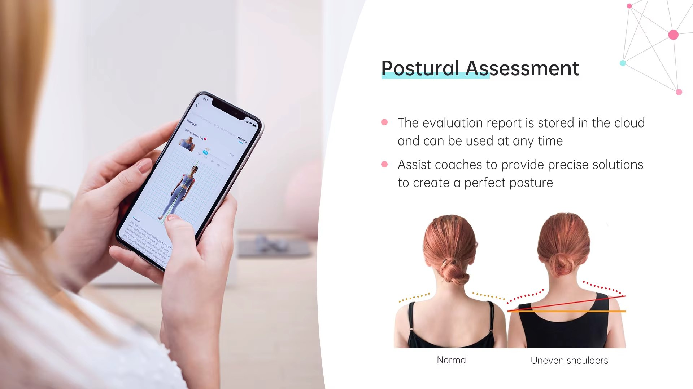

Obtenez une vue d'ensemble de votre posture et de votre condition physique afin d'orienter votre plan de traitement ou votre programme d'entraînement.

L'analyse corporelle 3D permet d'obtenir une vue détaillée de votre posture et de certains indicateurs de votre condition physique afin de mieux orienter votre prise en charge.

En quelques minutes, notre technologie recueille différentes mesures qui nous aident à mieux comprendre votre condition actuelle.
Obtenez des données objectives sur votre condition actuelle.
Adapter votre massage thérapeutique ou votre programme EMS à vos besoins.
Comparer vos résultats au fil du temps pour visualiser votre évolution.
Recevoir des explications claires afin de mieux comprendre les résultats obtenus.
Chez KinéPulse, nous utilisons l'analyse corporelle 3D comme un outil d'évaluation afin de mieux comprendre votre posture, votre condition physique et vos objectifs. Ces informations nous aident à personnaliser nos recommandations dès votre première visite.
L'analyse corporelle 3D est offerte avec chaque massage thérapeutique afin d'orienter le traitement selon vos besoins.
Elle est également incluse gratuitement lors de votre consultation EMS afin d'établir un programme adapté à vos objectifs.
L'analyse corporelle 3D est incluse gratuitement avec votre massage thérapeutique ou votre consultation EMS.
Non. L'analyse est rapide, non invasive et ne provoque aucune douleur.
L'analyse est offerte dans le cadre d'un massage thérapeutique ou d'une consultation EMS. Elle permet de mieux personnaliser votre accompagnement.
L'analyse prend généralement entre 5 et 10 minutes.
Oui. Un membre de notre équipe vous explique les résultats et répond à vos questions afin que vous compreniez les informations recueillies.
Que vous choisissiez un massage thérapeutique ou une consultation EMS, notre équipe vous accompagne avec une approche personnalisée basée sur une évaluation de qualité.